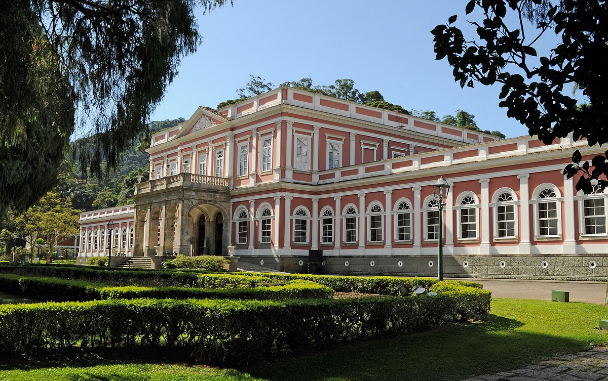
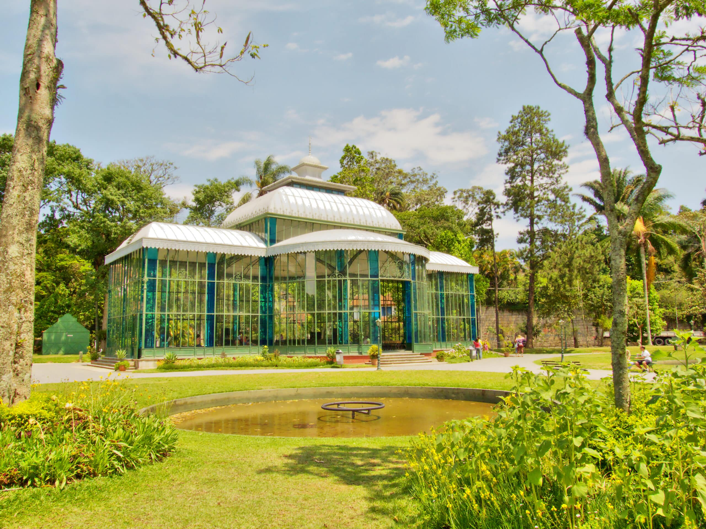
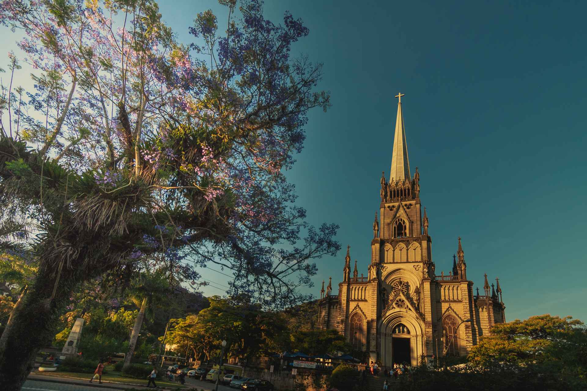

Área Leste de Petrópolis
Explore os principais pontos turísticos da região Leste de Petrópolis:
-
Museu Imperial - Antigo lar da familia imperial

-
Palácio de Cristal - Presente para princesa Isabel de seu marido

-
Catedral São Pedro de Alcântara - Dedicada ao padroeiro da cidade
